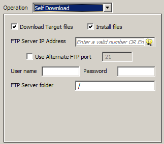

|
|
|
|
|
|
|
|
Use the dialog to enable the Self Download operation. The Self Download operation is supported in:
Target action
Panel action
Target Function Key (When Touch)
Panel Function Key (When Touch)
Switch (When Touch)
Selector
For more information on Self Download, see Section 25.6.9, Self Downloading to Target Machines.

The following table describes the settings in the dialog box:
|
Property |
Description |
|
Download Target files |
Select to download files to the target machine. |
|
Install files |
Select to install files on the target machine. The target machine restarts when installation is complete. |
|
FTP Server IP Address |
Enter a valid IP address or a mathematical expression of data type IP Address String. |
|
Use Alternate FTP port |
Select to specify an FTP port. |
|
User name / Password |
Enter the user name and password for accessing the FTP server. |
|
FTP Server folder |
Enter the path to the FTP folder where you store the files, for example /SelfDL. |